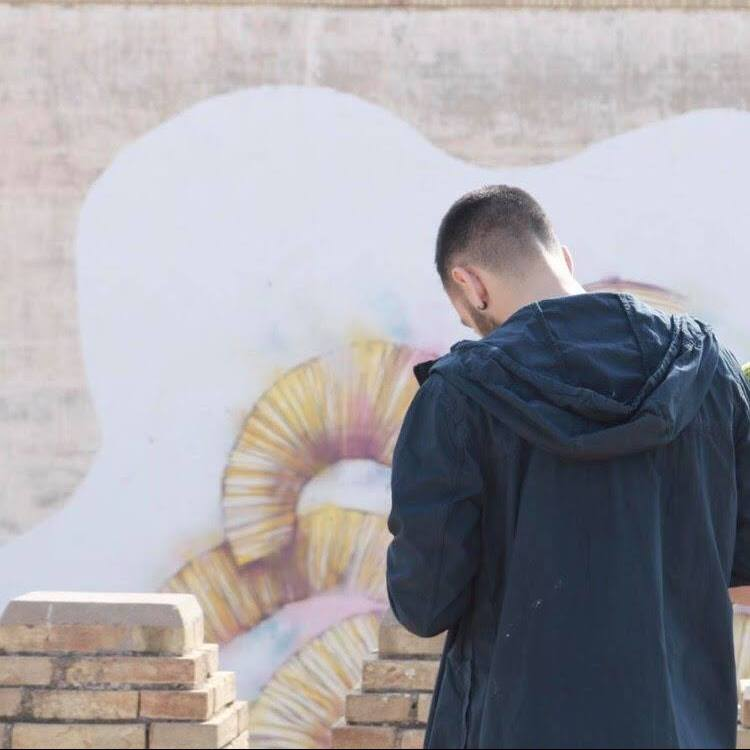

¡Hola! Me llamo Manu.

Soy una persona con gran capacidad de organización y trabajo en equipo. Buenas relaciones interpersonales tanto dentro como fuera del ambiente laboral. Responsable, diligente, innovador y imprevistos. Como periodista, considero poseer habilidades dentro del ámbito de la investigación y la redacción, informando de una forma clara y precisa.
Para conocerme un poco mejor, aquí hay un poco de música que me gusta.